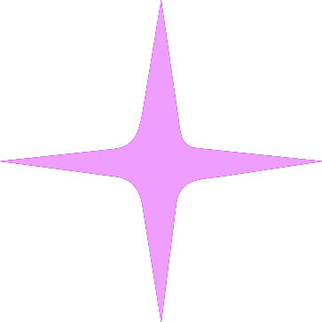
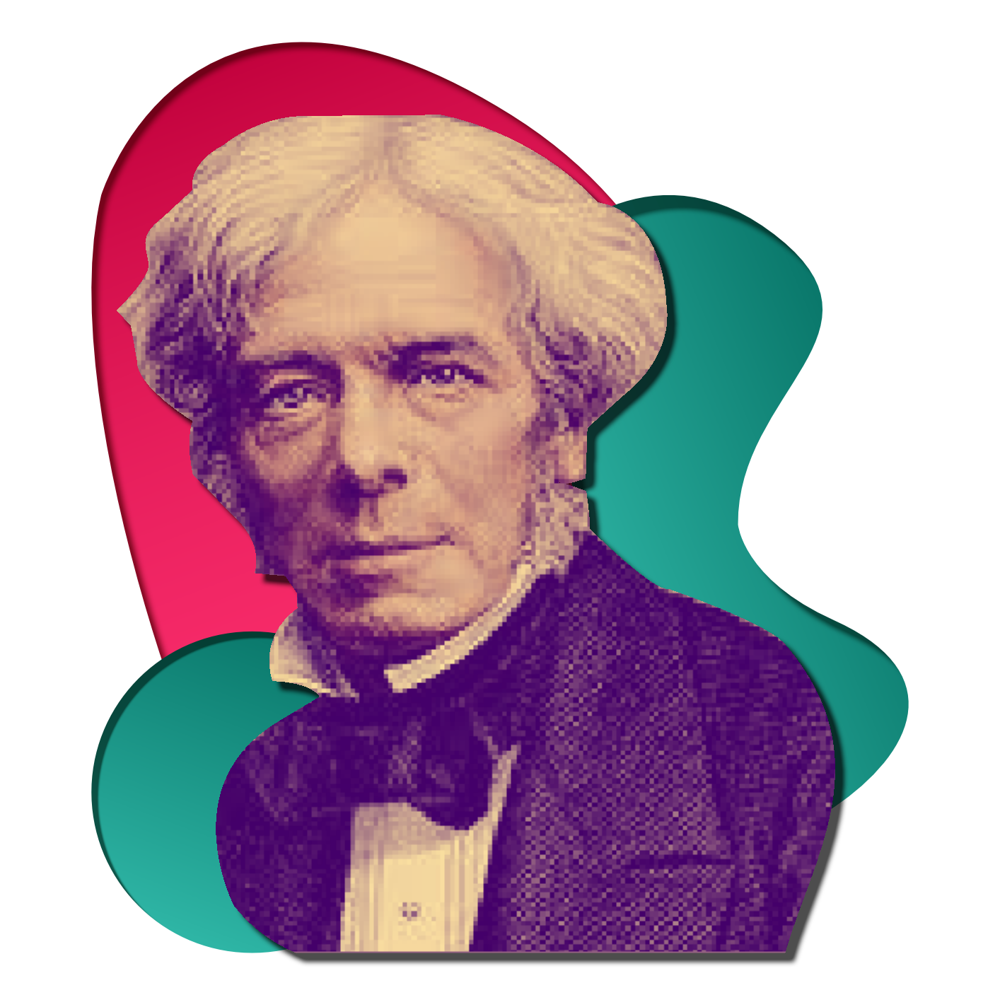
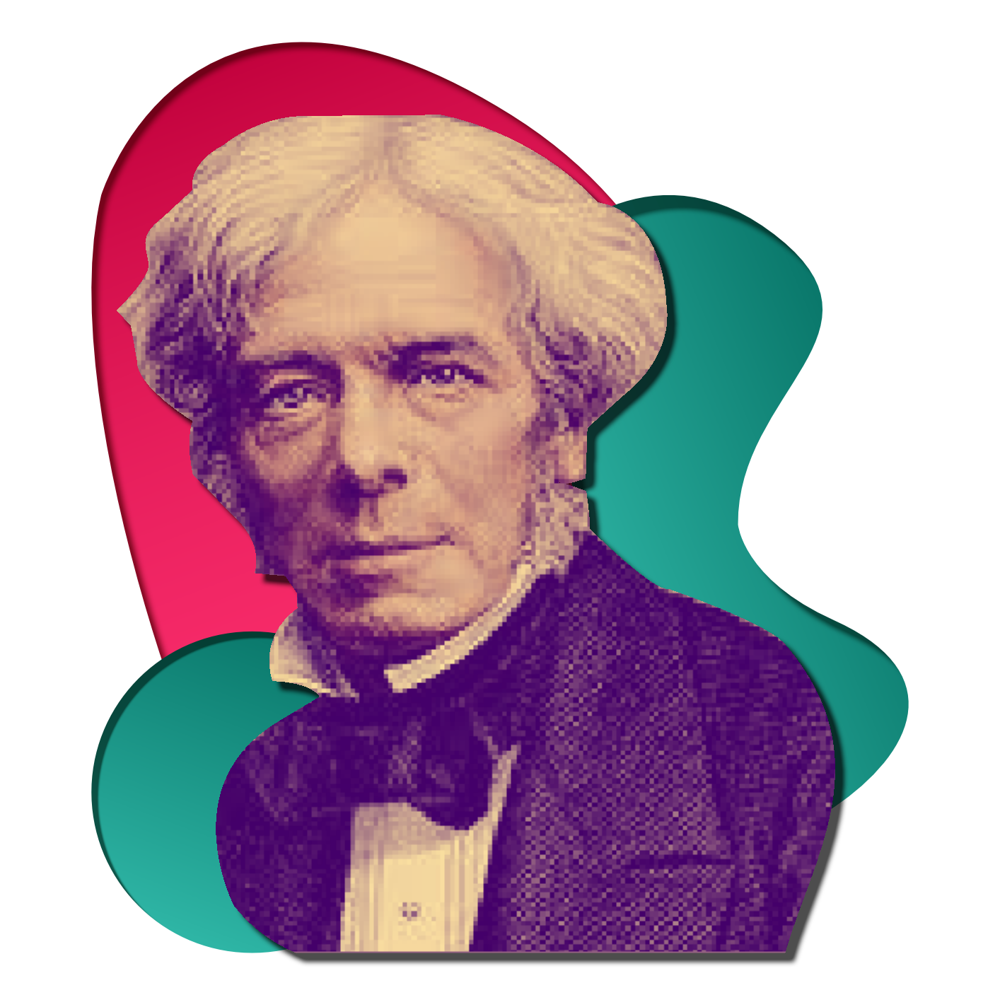
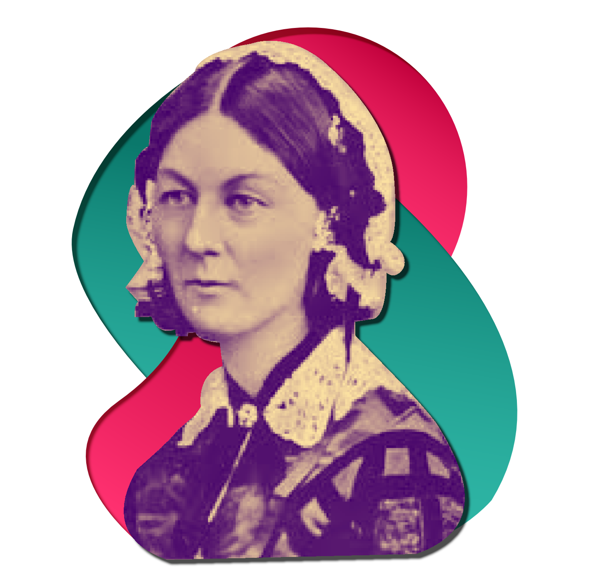
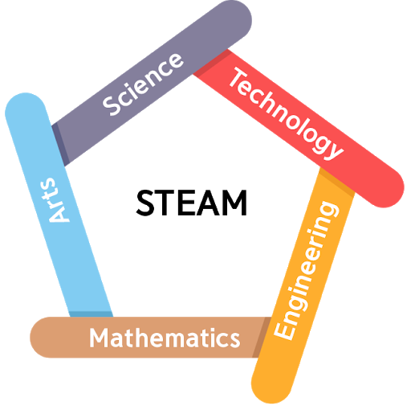

MODERN HISTORY


INDUSTRIAL ERA
The Industrial Revolution marked a period of development in the latter
half of the 18th century that transformed largely rural, agrarian societies in Europe and America into
industrialized, urban ones.
Goods that had once been painstakingly crafted by hand started to be produced in mass quantities by machines in
factories, thanks to the introduction of new machines and techniques in textiles, iron making and other
industries.
So who were the major influences?
THE INDUSTRIAL REVOLUTION
 

MICHAEL FARADAY
Michael Faraday was an English scientist who contributed to the study of electromagnetism and
electrochemistry. His main discoveries include the principles underlying electromagnetic induction, diamagnetism
and electrolysis.
Faraday achieved his early renown as a chemist. His reputation as an analytical chemist led to his being
called as an expert witness in legal trials and to the building up of a clientele whose fees helped to support
the Royal Institution.
Faraday’s ingenuity and laboratory skill enabled him to construct an apparatus that confirmed this conclusion.
This device, which transformed electrical energy into mechanical energy, was the first electric motor.
FARADAY'S MOTOR
The first surviving Faraday apparatus, dating from 1822, which demonstrates his work in magnetic rotation.
Faraday used this mercury bath to transform electrical energy into mechanical energy, creating the first
electric motor.
Self-taught British scientist Michael Faraday (1791 – 1867) was the first to understand what these discoveries
implied. If a magnetic pole could be isolated, it ought to move constantly in a circle around a current-carrying
wire.

THE RENAISSANCE MAN
LEONARDO DA VINCI
Leonardo da Vinci was an Italian polymath of the High Renaissance who is widely considered one of the most
diversely talented individuals ever to have lived.
The term "Renaissance man" comes from fifteenth-century Italy and refers to the idea of a person with
knowledge and skills in a number of different areas. Perhaps, no single individual defines the idea of a
Renaissance man better than Leonardo da Vinci – an artist, scientist, architect, engineer and inventor.
One of the most prolific inventors in history, Leonardo da Vinci dreamed up inventions and innovations across
a variety of fields. Whether designing weapons of war, flying machines, water systems or work tools, da Vinci
the inventor (much like da Vinci the artist) was never afraid to look beyond traditional thinking or "dream
big".
FLYING MACHINE
Though the first actual helicopter wasn’t built until the 1940s, it is believed that Leonardo da Vinci’s
sketches from the late fifteenth century were the predecessor to the modern day flying machine.
Leonardo da Vinci designed a flying machine over 400 years before the Wright brothers achieved the first
sustained flight.The Flying machine had a wingspan that exceeded 33 feet, and the frame was to be made of pine
covered in raw silk to create a light but sturdy membrane. The pilot would lie face down in the center of the
invention on a board.
Leonardo da Vinci's Flying Machine Invention — Leonardo Da Vinci
Inventions. (2021). Retrieved 1 May 2021, from https://www.da-vinci-inventions.com/flying-machine
THE SOCIAL REFORMER
FLORENCE NIGHTINGALE
known as “The Lady With the Lamp,” was a British nurse, social reformer and statistician best known as the
founder of modern nursing. Her experiences as a nurse during the Crimean War were foundational in her views
about sanitation.

Nightingale was put in charge of nursing British and allied soldiers in Turkey during the Crimean War. She
spent many hours in the wards, and her night rounds giving personal care to the wounded
She spent many hours in the wards, and her night rounds giving personal care to the wounded established her
image as the “Lady with the Lamp.”
ROSE CHART
This privately printed work contained a color statistical graphic entitled "Diagram of the Causes of Mortality
in the Army of the East" which showed that epidemic disease, which was responsible for more British deaths in
the course of the Crimean War than battlefield wounds, could be controlled by a variety of factors including
nutrition, ventilation, and shelter.
The graphic, which Nightingale used as a way to explain complex statistics simply, clearly, and persuasively,
has become known as Nightingale's "Rose Chart."
THE INFORMATION ERA
ALAN TURING
Alan Turing , in full Alan Mathison Turing, (born June 23, 1912, London, England—died June 7, 1954, Wilmslow,
Cheshire), British mathematician and logician, who made major contributions to mathematics, cryptanalysis,
logic, philosophy, and mathematical biology and also to the new areas later named computer science, cognitive
science, artificial intelligence, and artificial life.
Having returned from the United States to his fellowship at King’s College in the summer of 1938, Turing went
on to join the Government Code and Cypher School, and, at the outbreak of war with Germany in September 1939, he
moved to the organization’s wartime headquarters at Bletchley Park, Buckinghamshire.
In 1945, the war over, Turing was recruited to the National Physical Laboratory (NPL) in London to create an
electronic computer. His design for the Automatic Computing Engine (ACE) was the first complete specification of
an electronic stored-program all-purpose digital computer.
BOMBE
Detail of rotating (top) drums on a rebuilt Bombe machine, a code-breaking machine, originally developed by
Alan Turing and others, used during World War II; in the National Museum of Computing, Bletchley Park, Milton
Keynes, Buckinghamshire, England.
For the rest of the war, Bombes supplied the Allies with large quantities of military intelligence. By early
1942 the cryptanalysts at Bletchley Park were decoding about 39,000 intercepted messages each month, a figure
that rose subsequently to more than 84,000 per month—two messages every minute, day and night.
Why is STEAM important in the 21st Century?
Steam Education
Steam is very important for the future of Brunei Darussalam both the students and teachers. STEAM is a way to
take the benefits of STEM and complete the package by integrating these principles in and through the arts.

STEAM allows students to connect their learning in these critical areas together with arts practices,
elements, design principles, and standards to provide the whole pallet of learning at their disposal. STEAM
removes limitations and replaces them with wonder, critique, inquiry, and innovation.
With the influence of our historic inventors, this can inspire the growth of our future generation to make
more innovative works and contribute to our good-well being country to prepare and prosper our future.
About Us
We are a group of students doing our Final Year Project.
This website was created to spread awareness of the history of
technology and to showcase our work.
Thank you for visiting our website and supporting us.
Our Mission
Our objective is to educate the public about the Roots of Modern
Technology along with the understanding of STEAM Education.
Designer
Mudzfirah Ibrahim
Amalina Amin
Animator
Syazwan Metussin
Azhar Khir
Programmer
Aniq Irawadi
Sharime Sapai